| 日付 | 2014年8月11日（月） - 2014年8月12日（火） |
|---|---|
| メンバー | 家族（妻、長女・3歳、長男・1歳） |
| アクセス | 車 |
今年の夏休みは中央アルプスの千畳敷カールに行ってみようと考えていた。
しかし、台風11号の影響で、夏休みは完全な雨予報。
早々に宿をキャンセルし、計画を白紙に戻す。
雨のために夏休みの計画変更を余儀なくされるのは、これで3年連続だ。
いつになったら、晴れの夏休みが訪れるのか…
仕方がないので、実家に帰るついでに滋賀県に1泊し、
天気と相談しながら旅行を行うことにする。
1日目
今回の目的地の最有力候補である伊吹山に向かうため、関ヶ原ICで高速道路を降りる。
朝から走りっぱなしのため、まずはレストランで腹ごしらえ。
その後、電話で伊吹山の山頂付近の天気を問い合わせると、
視界の悪い時で数十メートル、視界の良い時なら駐車場の端から端まで見えるとのこと。
何れにせよ、展望は全く期待できなさそうだ。
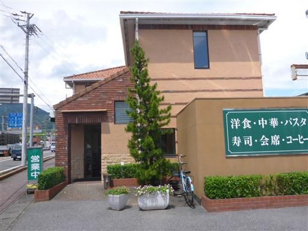
仕方がないので、伊吹山は明日にまわして琵琶湖に向かう。
向かったのは彦根にある松原水泳場。人が少なく、割と寂しい水泳場だ。
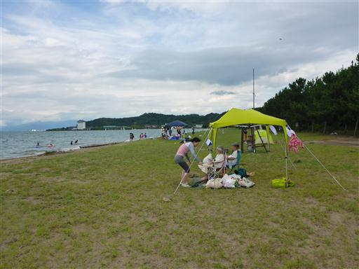
波は驚くほど高い。水面に顔を出して泳いでいると、頭より高い波がやってくる。
雲が出ていて日差しがなく、風が強くて寒いため、1時間半ほど遊んで撤収する。
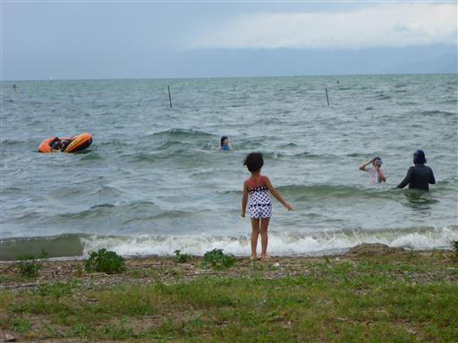
琵琶湖の後は、彦根城に向かう。
彦根を代表する観光地で、ここに来るのは本当に久しぶりだ。
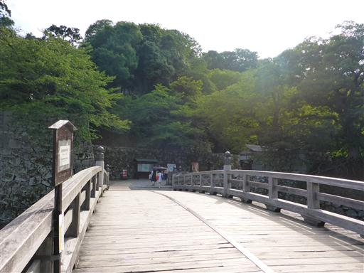
彦根城の堀を遊覧船が走っている。
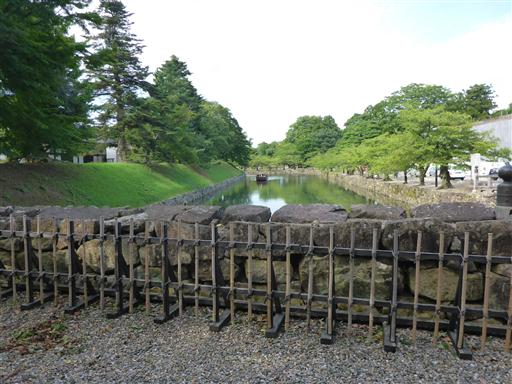
階段を登っていく。城までは結構標高差がある。
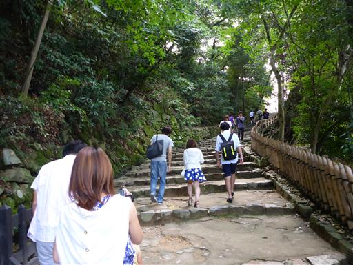
廊下橋。非常に立派な橋だ。
この橋を落とすと敵の侵入を防ぐことができる。
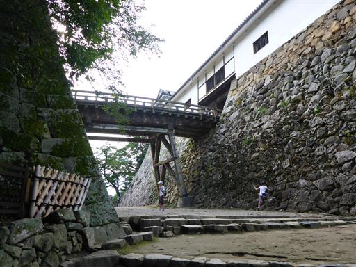
ぐるりと回り込んで橋の上に出てくる。
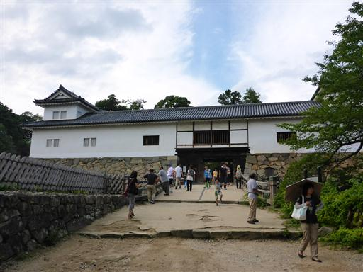
門を潜ると天守閣は間近だ。
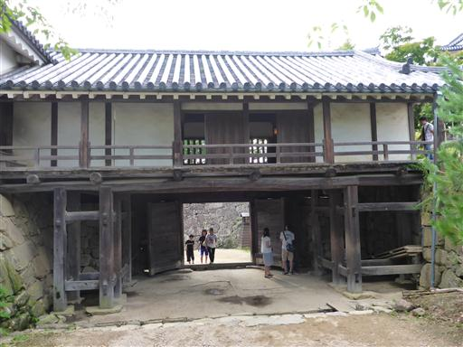
彦根城の天守閣に到着。日本に12しかない貴重な現存天守だ。
城のサイズは思ったよりもだいぶ小さい。
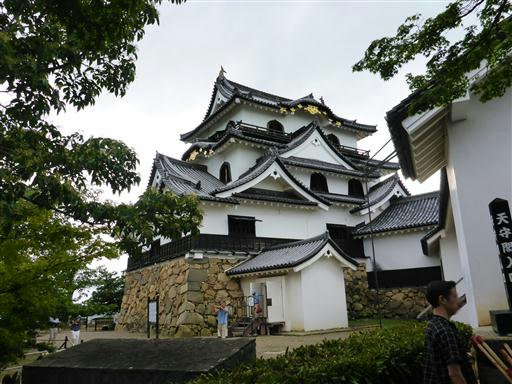
城壁の縁にある展望台。高台にあるので展望が良い。
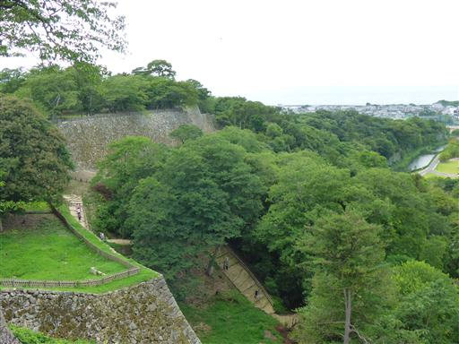
雲が取れて、大きな伊吹山の姿が見えている。
今山頂に立っていれば展望を得られただろう。
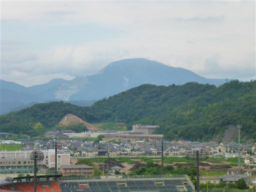
西の方には琵琶湖が見えている。
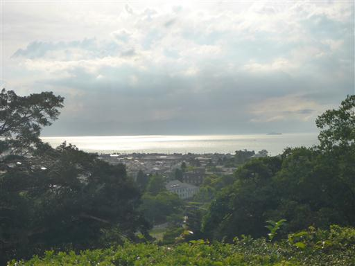
彦根城の天守閣に入る。入口付近は大混雑だ。
ひこにゃんの影響か、昔よりも観光客の数は増えている。
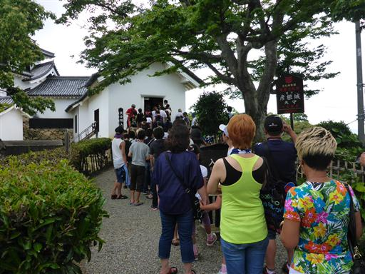
天井は曲がりくねった梁だ。
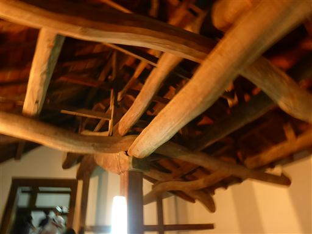
城内も人が多い。階段の前は長蛇の列ができている。
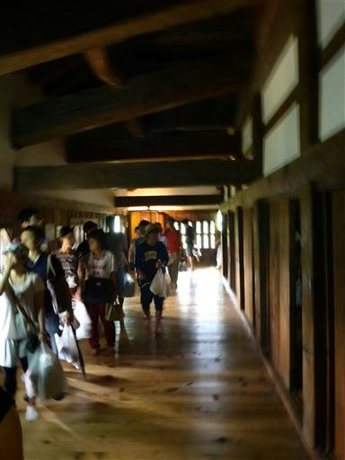
階段を上る。手すりがないと怖いくらいの急傾斜だ。
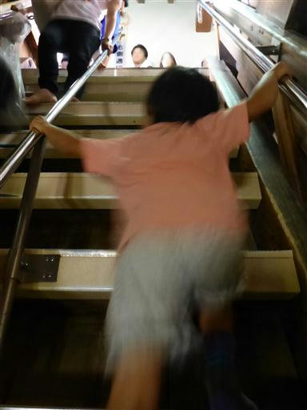
最上階に到着。小さな部屋と回りを取り囲む廊下がある。
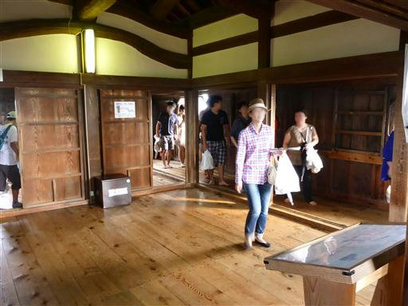
金網が張られた窓から外の景色を楽しめる。
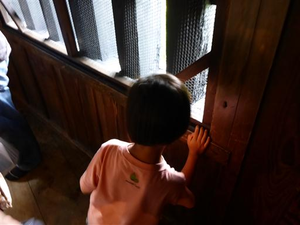
見えるのは見事な屋根瓦だ。
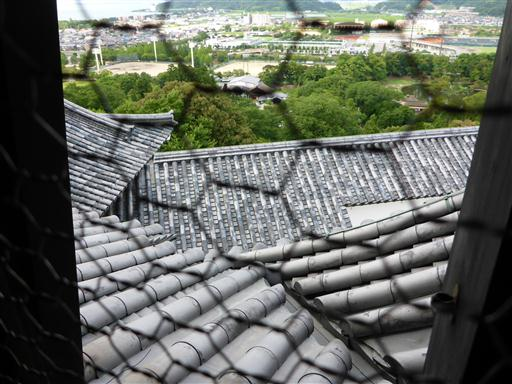
城内を一通り見学したら、城を後にする。
時刻は17時。夕食に向かうことにする。息子は完全に眠ってしまった。
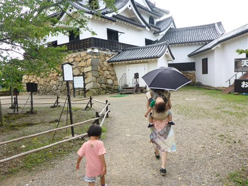
彦根の城下町にある飲食店、ほっこりやで夕食をとる。
この辺りは景観に統一感があり、よい雰囲気の場所だ。
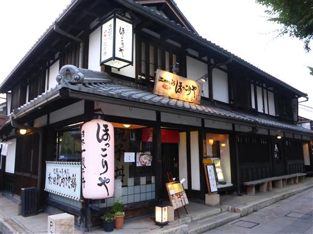
場所を米原に移して本日の宿泊場所、旅館近江屋に到着する。
家族経営の小さな旅館だ。小さな部屋だったが居心地の良い宿だった。
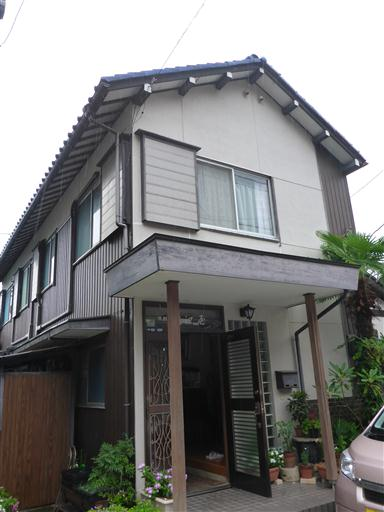